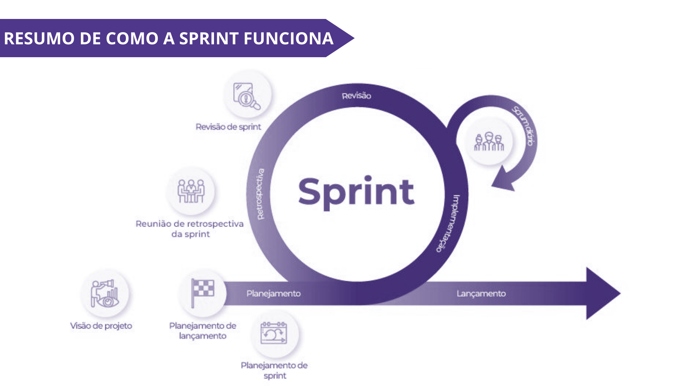

1ª Trilha - Iniciando sua Jornada:
O que é o Scrum?
O Scrum é uma metodologia que surgiu do Manifesto Ágil, um movimento
que modernizou o processo de desenvolvimento de software. No
entanto, sua aplicação vai muito além dessa área. Originalmente
criado para gerenciar e planejar projetos de sistemas, o Scrum hoje
é amplamente utilizado por equipes com objetivos variados.
Desenvolvido por Ken Schwaber e Jeff Sutherland em 1993, enquanto
trabalhavam na Easel Corporation, o Scrum é uma estrutura processual
(ou framework) padronizada, composta por agentes e atividades
específicas. Seu diferencial é a simplicidade e a praticidade com
que gerencia projetos complexos.
O Scrum se fundamenta no empirismo, ou seja, na prática e na
experiência como guias principais. As decisões são baseadas em
vivências anteriores, e novas ideias surgem por meio da observação e
da experimentação. Cada funcionalidade ou inovação é testada com o
envolvimento direto de usuários finais. Somente após a validação de
que essas soluções realmente atendem às necessidades dos clientes é
que o próximo passo do projeto é dado.

Com essa abordagem incremental, pequenos avanços certeiros são
acumulados até que o produto final atenda perfeitamente às
expectativas do cliente.
Hoje, o uso do Scrum não se limita apenas ao desenvolvimento de
software. Sua metodologia é tão eficaz que já é aplicada em diversas
áreas e tipos de empresas. Um dos setores que mais se beneficia do
Scrum é o desenvolvimento de produtos, em geral, devido à sua
capacidade de organizar e acelerar processos.